Case 01 · Enterprise AI · UAE
Aleria
Building one visual system across an enterprise AI product, its brand and public communication.
01 / Context
A fast-growing AI company needed to look like one company across product, sales, events and institutional communication.
From a fragmented identity to a working visual system.
Aleria’s identity was still raw and inconsistent. My task was to define a recognizable direction that could carry a broad product ecosystem, enterprise sales materials and high-visibility public communication without losing clarity.
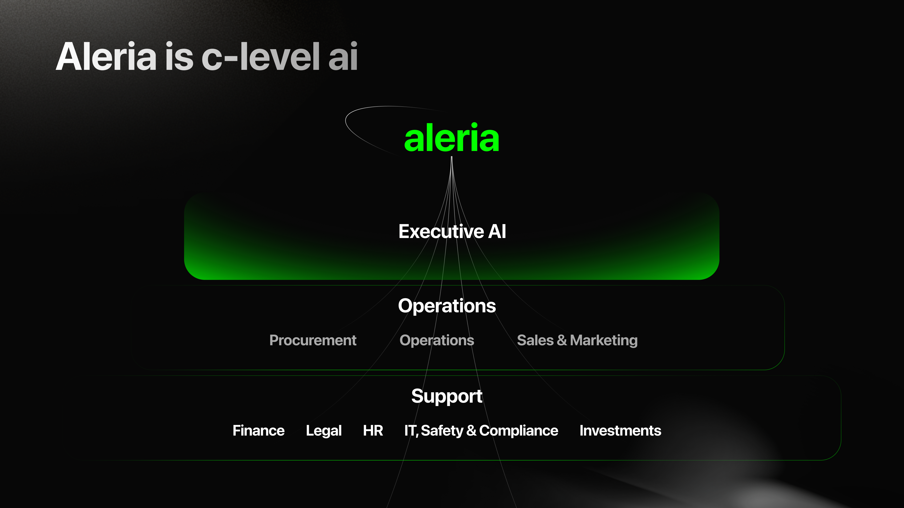
02 / The system
The brand had to move from a logo into a repeatable operating system.
- 01Brandbook and visual principlesFoundation
- 02Main website, pricing and product pagesAcquisition
- 03Mobile onboarding, store screens and web UIProduct
- 04Commercial decks, roll-ups, flyers and manualsSales / Events
- 05Campaign motion and video-production systemsCommunication
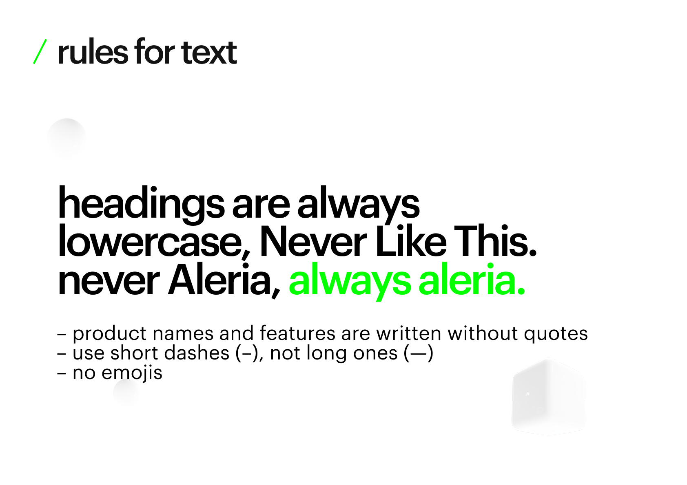
03 / Website and product
The same visual logic connects the public story with a complex AI product ecosystem.
From positioning to detailed product decisions.
I designed the main website direction, product and industry communication, pricing logic and supporting pages as parts of one system. The experience had to explain a technically broad platform without turning into generic enterprise software.

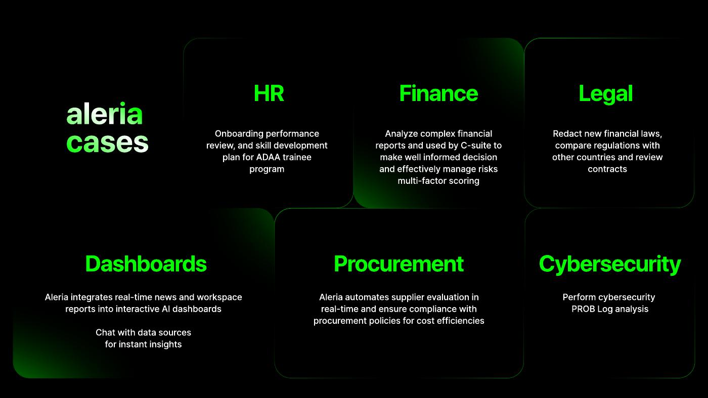
04 / Product experience
The brand continues inside the product through content, interaction and motion-ready states.
A visual system designed to work, not only to present.
The Figma production file covers onboarding, personal AI surfaces, widgets, workspaces, account and settings states, banners, waitlists, store screens and web UI explorations. Product-update communication turned complex features into a clear, recognizable visual narrative.
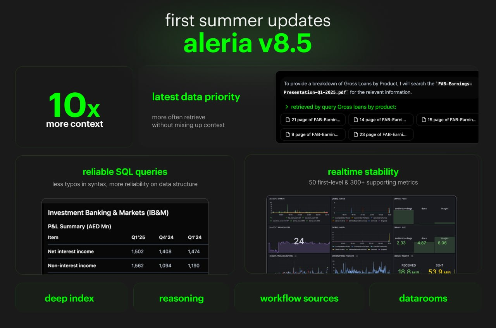
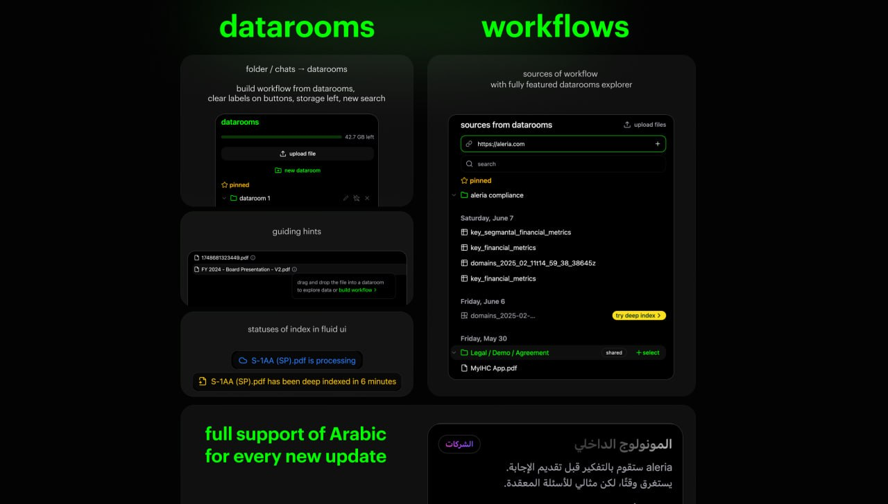
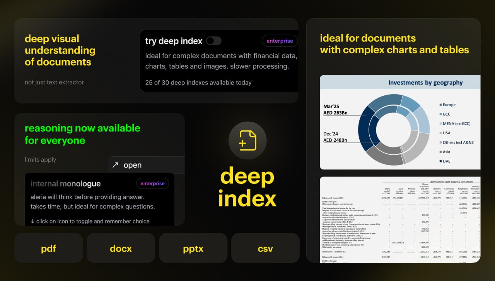
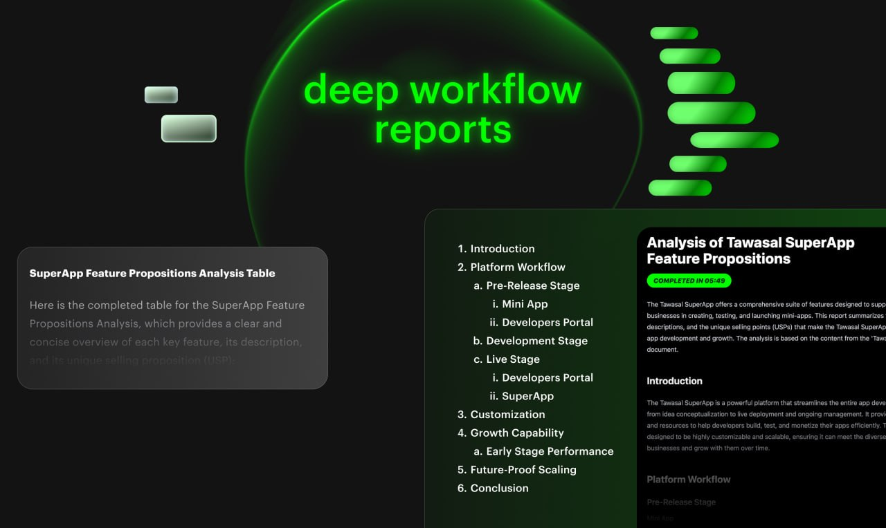
Onboarding film / 06 scenes
Your AI, already part of your day.
A cinematic onboarding system introduces Aleria through familiar moments instead of a conventional feature tour — from home and office to meetings, dinner and tomorrow.
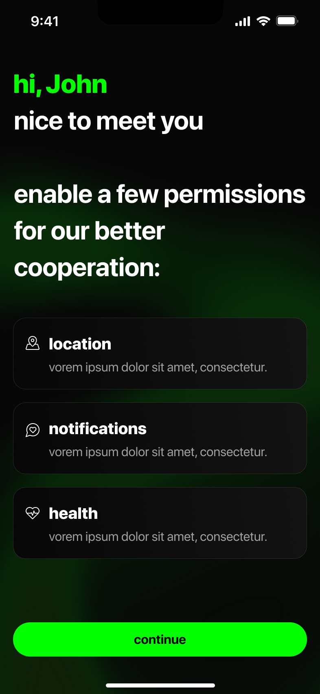
05 / Sales and institutional communication
One system had to remain credible in a product demo, a leadership presentation and a physical event space.
Designed for different levels of attention.
Commercial presentations explain sovereignty, privacy and the relationship between executive AI, operations and support functions. Roll-ups and flyers compress the same language into immediate, high-contrast communication for events.
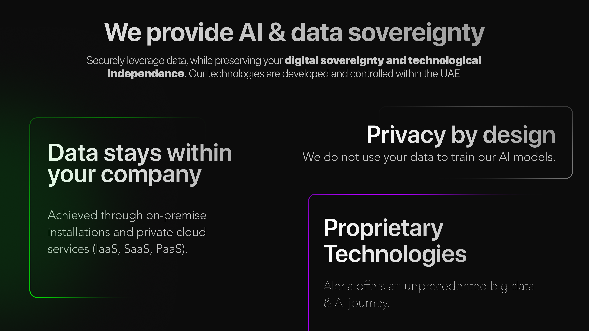
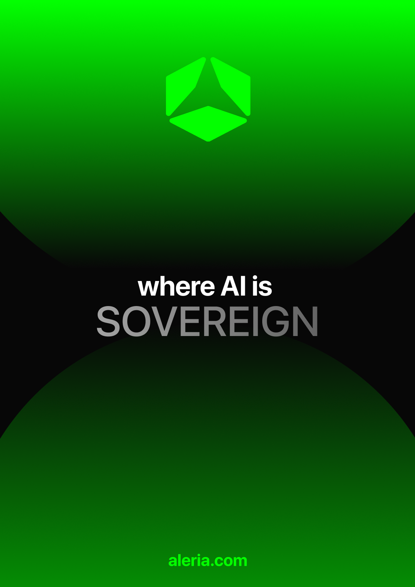
06 / My role
I owned the visual system and made the final brand decisions.
Defined the visual language and carried it across every major touchpoint.
Directed a team of two, distributed tasks and conducted design reviews.
Presented creative decisions and worked with leadership and product stakeholders.
07 / Delivery
The outcome was not a single campaign. It was a connected brand and product ecosystem.
Designed for mission-critical, enterprise-scale communication.
The final system covered external brand communication, product interfaces, institutional presentations, events, internal documents and motion. Claims shown here are limited to work from my tenure; later changes to the live website are not presented as my authorship.
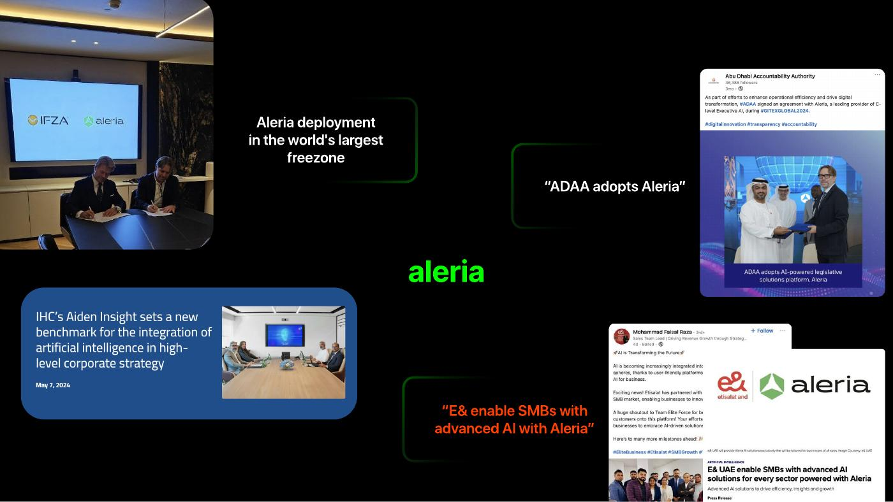
Next case
Lumery↗